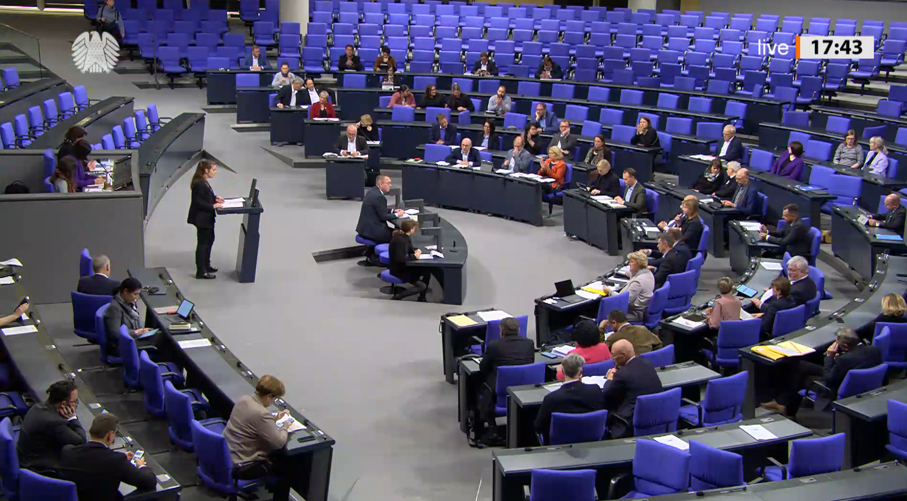
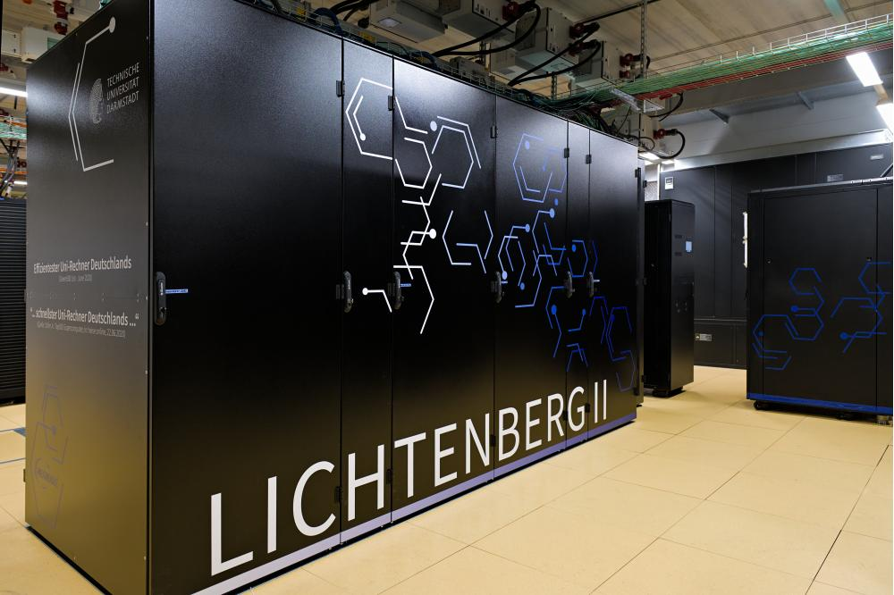
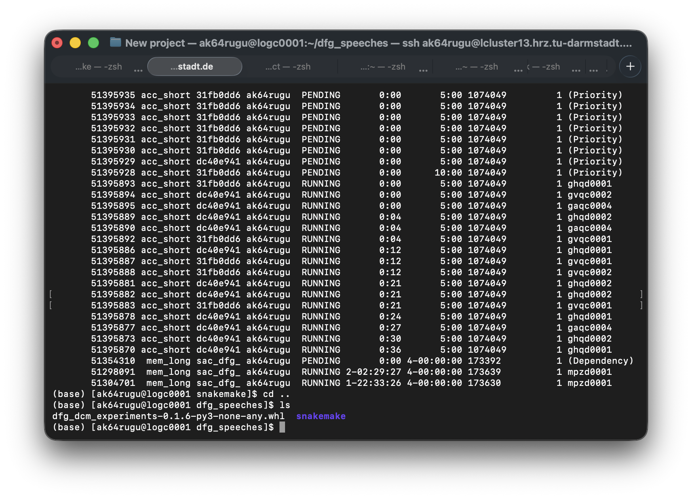
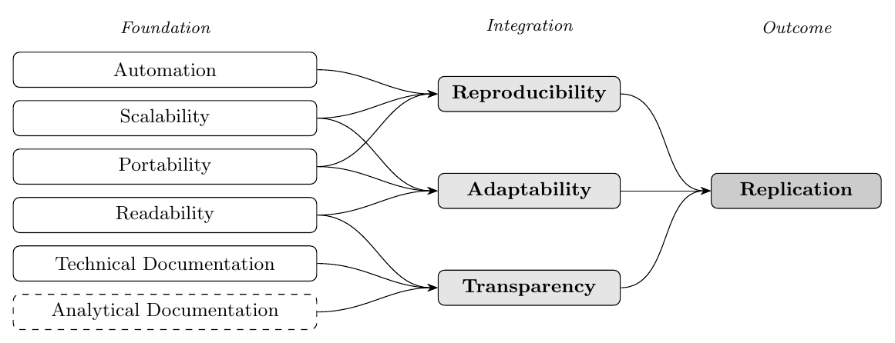
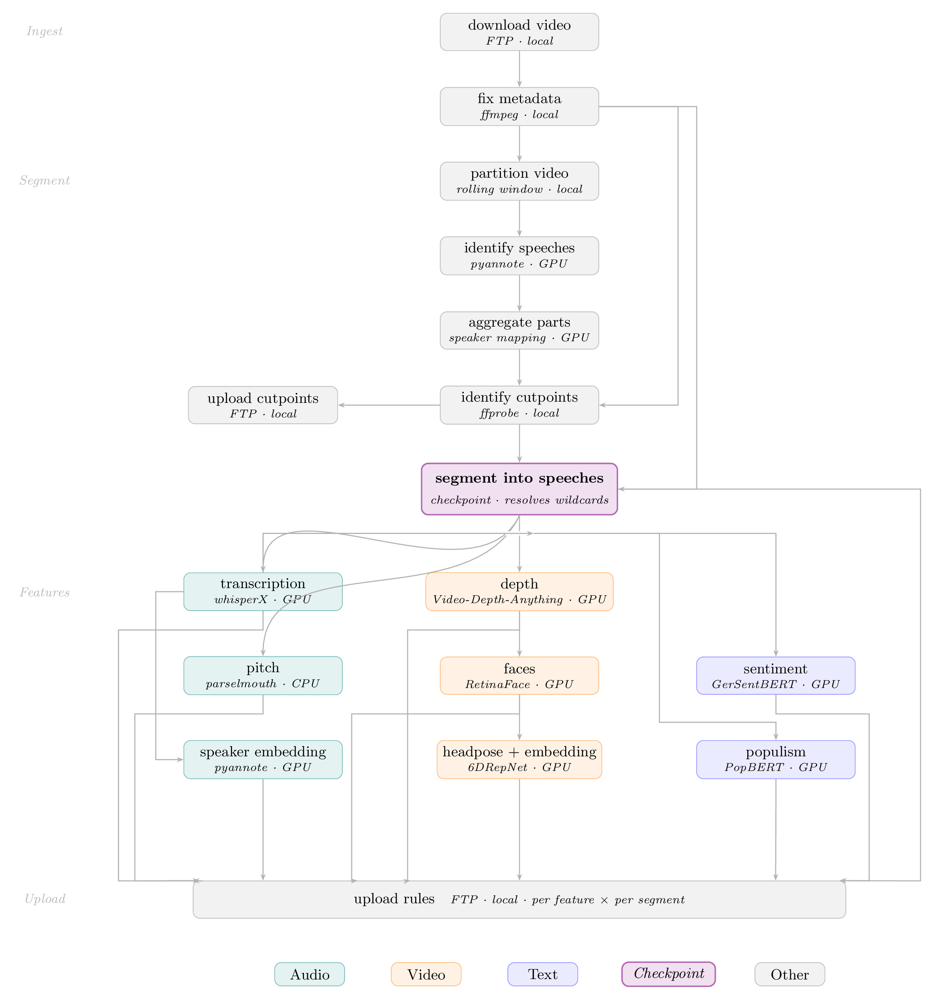

From Desktop to Cluster


Complex Methods in Computational Social Science to Address this Data
How can we analyze rich, complex data and apply computationally demanding methods at scale?
High-Performance Computing

What You Will Take Away
Conceptual understanding
- Why desktop computing hits a wall
- CPU vs. GPU: what they’re good for
- What an HPC cluster actually looks like
Practical skills
- Connect to a remote cluster via SSH
- Navigate Linux filesystems
- Write, submit, and monitor batch jobs (SLURM)
Research workflow thinking
- Structure reproducible pipelines
- Understand resource trade-offs
- Know when (and when not) to use HPC
No prior HPC experience needed: Basic familiarity with R or Python and the terminal is helpful but not required.
Workshop at a Glance
| Block | Topic | |
|---|---|---|
| Block 1 | Why HPC? Motivation and big picture | 💬 Explore/Discussion |
| Block 2 | HPC architecture: nodes, cores, memory | |
| Block 3 | Connecting and navigating an HPC cluster | ✏️ Hands-on Exercise |
| Break | ||
| Block 4 | Job schedulers: writing and submitting jobs | ✏️ Hands-on Exercise |
| Block 5 | Monitoring, debugging and best practices | ✏️ Hands-on Exercise |
| Block 6 | Workflow managers and outlook | 🎬 Live Demo |
Block 1: Why HPC?
Desktop limits · CPU vs. GPU · When HPC is (and isn’t) worth it
The Desktop Computing Wall
You’ve hit the wall when…
- Your script has been running for 3 days and you need results tomorrow
- Loading the full dataset exhausts your RAM
- Training 100 model variants would take days sequentially
- Your laptop fan sounds afraid
The typical research laptop: 8-16 GB RAM · 8-16 CPU cores · no GPU · shared with your browser, RStudio, Zoom, and Spotify
Common CSS bottlenecks
| Task | Bottleneck |
|---|---|
| Large corpus NLP | RAM + CPU |
| Transformer fine-tuning | GPU memory |
| Image + text fusion (CLIP-style) | GPU memory |
| Audio / video transcription at scale | CPU + GPU |
| Web scraping + parsing | I/O + CPU |
CPU vs. GPU: The Core Distinction
CPU — Central Processing Unit
- A few powerful cores (4–128)
- Excellent at sequential, complex tasks
- Best for: data wrangling, statistical models
GPU — Graphics Processing Unit
- Thousands of small cores
- Excellent at massively parallel tasks (same operation on many values)
- Originally designed for graphics rendering
- Best for: deep learning, transformer models, large matrix operations
Use CPU for: lm(), tidytext, web scraping, simulation, most basic ML in scikit-learn
Use GPU for: BERT fine-tuning, image classification, large language models, torch/tensorflow training
What Is High-Performance Computing?
HPC = many computers working together, managed as a shared infrastructure
- Cluster: a collection of nodes connected by a fast network
- Node: one individual computer (server) in the cluster
- Job: a unit of computation you submit for execution
- Scheduler: the software that allocates resources and queues jobs
Think of HPC like a printing service: you submit a job, it gets queued, a machine picks it up, and you collect the result, but you don’t sit at the printer.
╔══════════════════════╗ ║ Login / Head Node ║ ← you SSH here ╠══════════════════════╣ ║ Job Scheduler ║ ← SLURM ╠══════════════════════╣ ║ Compute Compute ║ ║ Node 1 Node 2 ║ ║ Node 3 Node 4 ... ║ ╠══════════════════════╣ ║ Shared Storage ║ ╚══════════════════════╝
When to Use HPC in CSS Research
Good candidates for HPC
- Processing millions of documents (corpora, social media archives, audiovisual data)
- Fine-tuning or running large language models (BERT, GPT-class)
- Bootstrapping / permutation tests with many iterations
- Grid search over model hyperparameters
- Agent-based simulations at scale
- Large network analysis (graphs with millions of nodes)
Might not need HPC
- Analysis fits in laptop RAM (< ~8 GB data)
- Single model run completes in < 4 hour
- Highly interactive / exploratory analysis
- Output depends on human review at each step
Rule of thumb: If you wish you could run your script 10× faster or with 10× more data HPC is worth exploring.
Exercise 1 (5-10 Minutes): Find Your HPC
Task 1: Search for HPC resources you might have access to. Note down what you find and how easy it seems to get access.
Task 2: With your neighbours, discuss what did you each find and how different are access routes across your institutions.
Block 2: HPC Architecture
Nodes, cores and memory · Storage tiers · Software modules and environments
This Is What It Looks Like in Practice

Logged in into TU Darmstadt’s Lichtenberg cluster: jobs running, pending, and a Snakemake workflow directory
Anatomy of an HPC Cluster
You (SSH)
│
┌───────▼────────┐
│ Login Node │ — where you land, write code, submit jobs
│ (head node) │ DO NOT run heavy computation here
└───────┬────────┘
┌─────────────┼────────────┐
│ │ │
┌───────▼──────┐ ┌───▼──────┐ ┌──▼───────┐
│ Compute Node │ │ GPU Node │ │ Fat Node │
│ 32cores/128GB│ │ 8× A100 │ │ 2TB RAM │
└──────────────┘ └──────────┘ └──────────┘
│ │ │
└─────────────┼─────────────┘
┌───────▼────────┐
│ Shared Storage│ — /home, /scratch, /project
│ (e.g., NFS) │
└────────────────┘
Node Types and When to Use Them
| Node Type | Typical Resources | Best For |
|---|---|---|
| Standard compute | 32–128 cores, 256 GB RAM | Parallel R/Python jobs, NLP preprocessing |
| High-memory | 32–64 cores, 1–4 TB RAM | Very large datasets loaded into RAM |
| GPU | 4–8 GPUs (A100/H100), 40–80 GB VRAM each | Model training, inference at scale |
| Login / head | shared, limited | File editing, job submission only |
Never run heavy computation on the login node: You share these resources it with all other users.
Storage on HPC Systems
Most clusters have multiple storage tiers:
| Path | Purpose | Notes |
|---|---|---|
/home/<username> |
Personal files, scripts | Small quota (20-50 GB), backed up |
/scratch/<username> |
Temporary job I/O | Large (10-20 TB), not backed up, purged regularly |
/project/<groupname> |
Shared team data | Larger quota (1-5 TB), longer retention |
Best practices
- Store scripts and results →
/home - Write job output →
/scratch - Keep large raw data →
/projector/scratch - Copy results off the cluster after jobs finish
- Never rely on
/scratchlong-term
Scratch files are not backuped and often auto-deleted after 30-90 days.
Software on HPC: Environment Modules
HPC clusters use a module system to manage software versions:
Modules are optional: You can install and manage your own software (e.g. via Conda or pip) without ever loading a module. In practice, modules are mainly useful for system-level dependencies like CUDA drivers or MPI that are hard to install yourself.
Conda and Virtual Environments
For Python (and increasingly R), the package managers Conda or venv are preferred for reproducibility:
# Create a project environment
conda create -n css-project python=3.11
# Activate it
conda activate css-project
# Install packages
conda install -c conda-forge transformers torch pandas
# or: create from envrionment file
conda env create -f environment.yml
# (Optional) Export for reproducibility
conda env export > environment.ymlBlock 3: Connecting and Navigating
SSH · Linux essentials · File transfer
Connecting via SSH
SSH (Secure Shell) is how you talk to a remote HPC cluster:
Where to open SSH:
macOS: open Terminal (built-in, no install needed)
Windows: open PowerShell or Command Prompt (sometimes MobaXterm) (OpenSSH module is built into Windows 11, same commands as Mac)
Normal first time setup:
- Generate a key pair:
ssh-keygen -t ed25519 - Copy public key to cluster:
ssh-copy-id username@cluster - Optionally add to
~/.ssh/configfor a shorter login command
~/.ssh/config shortcut:
Host lichtenberg
HostName lcluster15.hrz.tu-darmstadt.de
User <username>
IdentityFile ~/.ssh/id_ed25519Then just: ssh lichtenberg
Windows note: key files live in C:\Users\<User>\.ssh\, use the same path syntax in config. No extra software is needed.
Essential Linux Commands
Navigation
Viewing and editing files
nano: navigate with arrow keys · search with Ctrl+W · exit with Ctrl+X (confirm save with Y)
Permissions and disk
Transferring Files
scp: secure copy (simple)
rsync: smarter sync (only transfers what changed)
# Upload, skip unchanged files
rsync -avz project/ <username>@lcluster15.hrz.tu-darmstadt.de:~/project/
# Download results folder
rsync -avz <username>@lcluster15.hrz.tu-darmstadt.de:~/results/ ./results/
# Dry run (see what would happen)
rsync -avzn project/ <username>@lcluster15.hrz.tu-darmstadt.de:~/project/FileZilla: alternative with user interface
A free, cross-platform SFTP client: drag and drop files between your local device and the cluster.
Keeping Sessions Alive: tmux
SSH connections drop. Use tmux to keep work running:
Workflow: SSH into cluster > start tmux session > do work > detach > close laptop > reconnect anytime > re-attach
Exercise 2: One Video You Will Work With
pres_debate_obama_romney.mp4
Exercise 2 (15-20 Minutes): Connecting and Uploading (1/2)
Task 1: Log in and explore
Before login: download your private key (📝)
macOS: open Terminal | Windows: open PowerShell / MobaXterm
- What is your home directory path?
- How much quota do you have in your
/home?
Task 2: Copy script
Task 3: Get the provided pres_debate_obama_romney.mp4
Option 1: Download video file (📝)
Upload from your local machine (either scp or rsync):
Verify on the cluster:
Option 2: Copy directly from HPC
Exercise 2 (15-20 Minutes): Running Scripts (2/2)
Task 4: Write a plain bash script
Integrate the provided transcription.py:
Create transcription.sh (using nano transcription.sh), a plain bash script that:
- Starts with
#!/bin/bash| 2. Runs:python transcription.py
Run it with bash transcription.sh -> What happens?
Coffee Break
Back in 15 minutes
Did you know?
Block 4: Job Schedulers and SLURM
Writing job scripts · Key parameters · Submitting and monitoring
What Is a Job Scheduler?
A job scheduler (also called a workload manager) is the traffic controller of an HPC cluster:
- Accepts job submissions from many users
- Decides when and where to run each job based on requested resources and priority
- Monitors jobs, handles failures, writes output logs
- Ensures fair sharing of cluster resources
The most common scheduler: SLURM (Simple Linux Utility for Resource Management)
User A submits job (4 cores, 1h)
User B submits job (32 cores, 8h)
User C submits job (8 cores, 2h)
│
▼
┌─────────┐
│ SLURM │ Queue and schedule
└─────────┘
│
┌────┴──────────────────────────────┐
│ Node 1 Node 2 │
│ (User A, User C)(User B) │
└───────────────────────────────────┘
Anatomy of a SLURM Job Script (Example)
#!/bin/bash
#SBATCH --job-name=sentiment_analysis # Job name (shows in queue)
#SBATCH --output=logs/job_%j.out # Standard output (%j = job ID)
#SBATCH --error=logs/job_%j.err # Standard error
#SBATCH --time=02:00:00 # Wall time limit (HH:MM:SS)
#SBATCH --nodes=1 # Number of nodes
#SBATCH --ntasks=1 # Number of tasks (processes)
#SBATCH --cpus-per-task=8 # CPU cores per task
#SBATCH --mem=32G # Memory per node
#SBATCH --partition=standard # Which partition/queue
# Setup
module load R/4.3.1
# Run
Rscript analysis/sentiment_analysis.R \
--input data/corpus.rds \
--output results/sentiment_scores.csvKey SLURM Parameters Explained
#SBATCH flag |
What it controls | Example |
|---|---|---|
--time |
Maximum run time. Job is killed if exceeded. | --time=04:30:00 |
--mem |
RAM for the whole job. Request more than needed. | --mem=64G |
--cpus-per-task |
CPU cores. Match to your parallelism plan. | --cpus-per-task=16 |
--partition |
Queue with specific hardware/limits. | --partition=gpu |
--gres |
Generic resources, e.g. GPUs. | --gres=gpu:1 |
--array |
Run same script with different inputs. | --array=1-100 |
--mail-type |
Email notifications. | --mail-type=END,FAIL,ALL |
| … | … | … |
Always request slightly more resources than you think you need (10–20% headroom). Jobs are killed hard when they exceed limits.
Your First SLURM Workflow
1. Python script (see transcription.py)
2. Job script (run_transcription.sh, you’ll get this file)
Exercise 3 (20-25 Minutes): CPU vs. GPU and Submitting SLURM Jobs
Task 1: Copy script
Task 2: Submit the CPU job first
Take run_transcription.sh and submit a job:
- Note the job ID
- Watch it start with
squeue - Check details with
scontrol show job <job_id> - Job is running? If so, look for job logs in your home folder and open them
Task 3: Cancel the CPU job
After ~3 minutes, check the log and then cancel:
Task 4: Submit the GPU job
Create a (renamed) copy of run_transcription.sh:
Same script, but:
- Add
#SBATCH --gres=gpu:1 - Set
export DEVICE=cudainstead ofexport DEVICE=cpu
Submit: sbatch run_transcription_gpu.sh
Block 5: Monitoring, Debugging and Best Practices
Checking job status · Common failure modes · Cluster etiquette · Job arrays
Monitoring Your Jobs
Reading squeue output:
| JOBID | PARTITION | NAME | USER | ST | TIME | NODES | NODELIST |
|---|---|---|---|---|---|---|---|
| 123456 | standard | multimodal_video | comptext | R | 0:45 | 1 | node042 |
| 123457 | standard | emotion_cls | comptext | PD | 0:00 | 1 | (Priority) |
R = Running · PD = Pending · CG = Completing · F = Failed
Common Failure Modes and Fixes
Job killed: OUT_OF_MEMORY
Job killed: TIMEOUT
Job stuck PENDING
Script errors
Job Arrays: Run Many Jobs at Once
Job arrays let you submit one script that scales to many inputs:
#!/bin/bash
#SBATCH --job-name=whisperx_transcription
#SBATCH --array=1-20 # <-- one task per input
#SBATCH --account=kurs00100
#SBATCH --partition=kurs00100
#SBATCH --reservation=kurs00100
#SBATCH --time=0-00:05:00
# ...
source /home/kurse/kurs00100/miniforge3/etc/profile.d/conda.sh
conda activate /home/kurse/kurs00100/env_whisperx
python transcription.py \
--config configs/config_${SLURM_ARRAY_TASK_ID}.ymlUse case: Run transcription for each of 20 videos. Pre-generate 20 config files, submit one array job.
Exercise 4 (15-20 minutes): Monitoring and Job Arrays
Task 1: Copy scripts
Take a look at run_transcription_array.sh and transcription_array.py. What has changed?
Task 2: Adapt bash and run the array
What is still missing in the array bash file? Add the neccessary SBATCH parameter for an array of three videos. Then:
Task 3: Monitor the array jobs
Watch all three tasks appear in the queue:
You should see multiple jobs. Once finished, check that all three results were produced:
Use sacct to compare runtimes across the three tasks:
Other Ways to Connect to the Cluster
VS Code Remote-SSH (recommended)
Connect directly from VS Code and edit files, run terminals, or browse the filesystem as if it were local:
- Install the Remote - SSH extension
Cmd+Shift+P-> Remote-SSH: Connect to Host- Enter
ssh -i <path/to/key> <username>@lcluster15.hrz.tu-darmstadt.de
You get syntax highlighting, file explorer, and an integrated terminal.
JupyterLab / RStudio Server
Some clusters offer browser-based interfaces via an Open OnDemand portal.
Connecting Claude to the cluster
It is technically possible to point Claude (via Claude Code) at your cluster over SSH. This lets it read files, run commands, and edit code directly on the HPC system.
⚠️ Do not do this on a shared cluster: An AI agent with shell access can submit jobs, delete files, and consume shared resources. This violates cluster etiquette and likely your institution’s usage policy. Use Claude locally and copy results manually.
Best Practices for HPC Jobs
Resource requests
- Start with a small test run
- Request 10–20% more than measured
- Use
sacctto profile real usage - Prefer many short jobs over few huge ones
Code hygiene
- Set seeds for reproducibility
- Save intermediate results (checkpoints)
- For productive jobs: Don’t use hardcode paths; use config files instead
- Log start time, end time, key parameters
Cluster etiquette
- Don’t compute on the login node
- Don’t request 10× what you need
- Clean up
/scratchafter jobs finish - Test locally on small data first
- Read the cluster documentation
Block 6: Workflow Managers and Outlook
The pipeline problem · Snakemake rules and DAGs · SLURM integration · Next steps
The Pipeline Problem
How to download, cut, track speakers, transcribe, extract gaze, extract pitch, … of more than 30,000 hours of video recordings of speeches?
Potential issues:
- Each step depends on the last
- Any step can fail
- Steps can run in parallel
- You need to scale to hundreds of files
preprocess.sh → tokenise.sh → embed.sh → analyse.sh
│ │
└── fail: restart manually? ─────────────┘
└── which outputs are up to date?
└── 100 files × 4 steps = 400 jobs?What you actually want:
- Declare what depends on what
- Re-run only what changed or failed
- Parallelise independent steps automatically
- Have a single command to run the whole pipeline
A Framework for Replication-Ready CSS Pipelines

Adapted from Mölder et al. (2021). Analytical Documentation is a CSS-specific extension.
Introducing Workflow Management to Computational Social Science
- Incremental builds: only re-run rules whose inputs changed or failed
- Automatic parallelism: independent rules run concurrently
- SLURM integration: each rule becomes a separate SLURM job via
--executor slurm - Reproducibility: the Snakefile is the documentation of your pipeline
- Error recovery: resume from the last successful rule with
--rerun-incomplete - Portability: the same Snakefile runs locally or on any HPC cluster
Snakemake for Reproducibility and Scale
Snakemake is a Python-based workflow manager. Each rule declares what it needs (input) and what it produces (output). Snakemake figures out the order and parallelism automatically.
rule generate_audio_feature_transcription:
"""Word-level transcript + speaker diarization."""
input:
video = "speeches/{parliament}/{filename}/videos/{base}_{segment}.mp4"
output:
json = "speeches/{parliament}/{filename}/features/{base}_{segment}_transcription.json"
resources:
runtime = lambda wc, input: int(
open(str(input.walltime)).read()),
gpu_job = 1
conda: "audio_env"
script: "scripts/generate_audio_feature_transcription.py"
rule generate_text_feature_sentiment:
"""Sentence-level sentiment (german-sentiment-bert)."""
input:
transcription = rules \
.generate_audio_feature_transcription.output.json
output:
json = "speeches/{parliament}/{filename}/features/{base}_{segment}_sentiment.json"
resources:
runtime = lambda wc, input: int(
open(str(input.walltime)).read()),
gpu_job = 1
conda: "text_env"
script: "scripts/generate_text_feature_sentiment.py"Why rules beat shell scripts:
- Each rule is self-documenting: inputs and outputs are explicit
- Snakemake tracks what’s done: re-runs only failed or outdated steps
resourcesmap directly to SLURM flags via a profileconda:pins the exact software environment per rule
Example: DAG of an Actual Project

Snakemake + SLURM: The Full Picture
SLURM profile (~/.config/snakemake/slurm/config.yaml):
executor: slurm
jobs: 64 # max concurrent SLURM jobs
latency-wait: 120
rerun-incomplete: True
use-conda: True
default-resources:
slurm_account: "my-project"
slurm_partition: "gpu-a100"
mem_mb: 65536
runtime: 10 # fallback wall time (minutes)
cpus_per_task: 16
slurm_extra: "--gres=gpu:1"
resources:
gpu_job: 32Per-rule resource overrides:
rule generate_audio_feature_transcription:
resources:
runtime = lambda wc, input: int(
open(str(input.walltime)).read()),
gpu_job = 1 # one GPU slot from the pool
conda: "audio_env"
script: "scripts/generate_audio_feature_transcription.py"
rule generate_text_feature_populism:
resources:
runtime = lambda wc, input: int(
open(str(input.walltime)).read()),
gpu_job = 1
conda: "text_env"
script: "scripts/generate_text_feature_populism.py"Live Demo: Productive Project on the Cluster
~30,000 hours of parliamentary video · multimodal feature extraction pipeline · Lichtenberg HPC
What you’ll see
- Active and pending jobs in
squeue - The Snakemake code across thousands of segments
- How progress and output are stored and logged
The scale
- ~30,000 hours (20TB) of video across 17 German parliaments
- Rules for transcription, pitch, faces, headpose, sentiment, populism,…
- Each segment processed independently
- One
snakemakecommand orchestrates it all
Workshop Summary
You now know how to…
- Distinguish CPU vs. GPU workloads
- Cescribe the anatomy of an HPC cluster
- Connect to a remote cluster via SSH
- Navigate a Linux filesystem
- Write a SLURM job script
- Submit, monitor, and cancel jobs
- Use job arrays for parallel batch runs
- Structure a project for HPC workflows
- Understand what workflow managers solve
The big idea
HPC is infrastructure: The same R and Python code you write today can scale to cluster size with relatively small changes.
Questions?
This is the space for immediate questions!
COMPTEXT 2026 Workshop
From Desktop to Cluster: Scaling Computational Social Science with High-Performance Computing
Andreas Kuepfer (TU Darmstadt)
🦋 ankuepfer.bsky.social
🌐 andreaskuepfer.github.io
✉ andreas.kuepfer@tu-darmstadt.de
From Desktop to Cluster | COMPTEXT 2026 Workshop